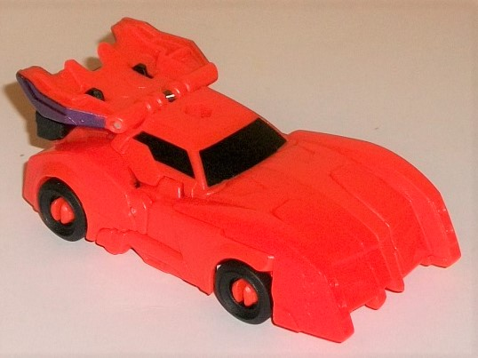
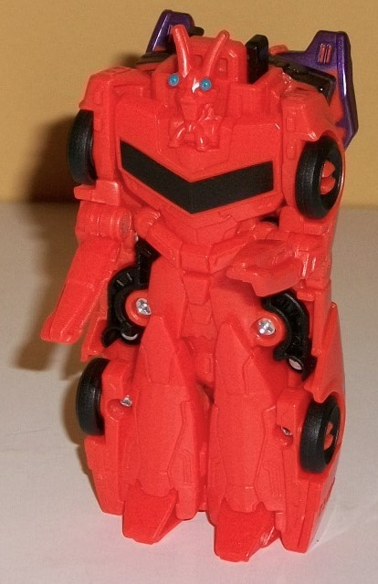
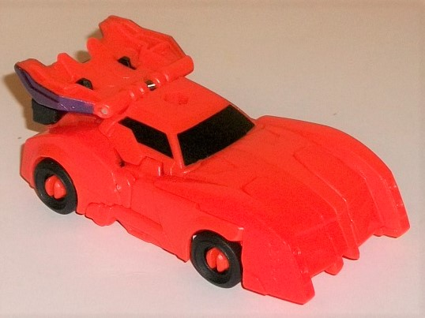
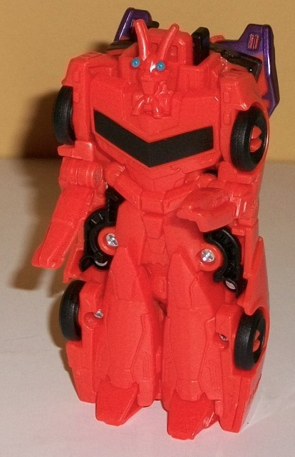
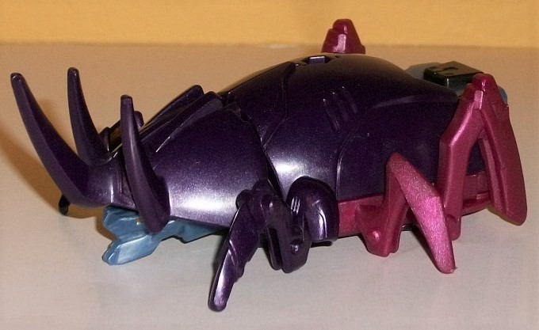
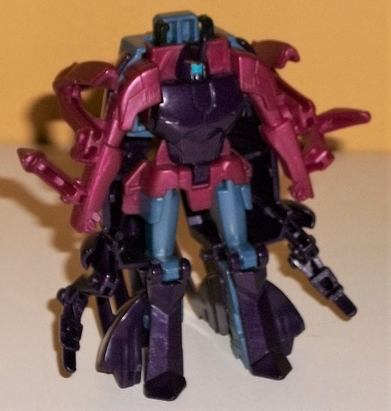
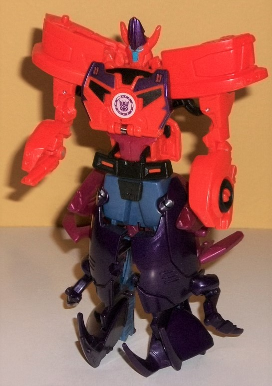

 
Difficulty of Transformation : Very Easy
Color Scheme : Milky orange, and some black, light blue, forest green, and metallic dark purple
Individual Rating : 3.7
Allegiances
: Decepticon
Size
: Crash Combiner 2-pack
Overall Rating
: 4.7
 Bisk
Bisk


Difficulty of Transformation
: Very
Easy
Color Scheme
: Milky orange, and
some black, light blue, forest green, and metallic dark purple
Individual Rating
: 3.7
Bisk is back, this time
as the upper half of a Crash Combiner. His car mode is pretty solid for
the most part-- except for the back section. Instead of having the lobster-like
bits coming off the back end-- or even really a proper back end, given
that his combiner port with the green arrow is back there-- you can instead
see the blatantly obvious combined mode chest piece folded up back there.
It's kind of an eyesore, but again, the rest of this, propportionally,
is pretty good, with a long front section and the necessary molded-in details,
like the grill across the front as well as the headlights on the small
"ridges" on the front that become his claws on his other toys. The drivers'
area is a smidge undersized, but it's not that big of a deal. What IS a
bigger deal is that only the windows are painted in this mode-- just them
and the wheels are black, everything else is a milky shade of orange. Granted,
it's a nice shade of orange, but MAN it needs to be broken up more, especially
in the front. There is a peg in the middle of the roof for you to plug
in either a Mini-Con Weaponizer or similarly-sized weapon for Bisk in this
mode.
Bisk's robot mode is
pretty much the underside of his car mode, but with the head flipped out
of the chest compartment, part of the sides rotated forward to become his
claws, and then segments of the front hood rotated around to form his feet.
Now, because of all the gimmickry Crash Combiner robot modes have always
tended to be rather weak, but Bisk's is a mite weaker still, as his arms
don't actually come out to the sides-- instead, only his elbows can move
back-and-forward in this mode, and they aren't large enough to be convincing
claws-- they're far too skinny. (Indeed, they actually form the LOWER part
of the claws of the combined mode.) The facesculpt is also very poor--
Bisk's very unique head just can't be adequately represented in something
close to two dimensions, and that's what the designers were limited to,
here. He's got the necessary details-- the long antennae, the light blue
eyes on eyestalks, the "beard"-- but represented in such a small, 2-D manner,
it just looks super weird-- in a bad way, not a good way like his
Warrior
figure-- and almost incomprhensible. Given the fact that the rest of the
mode is just molded onto the underside of the car mode, though, it's not
that bad, with all the necessary details here-- the faux window on the
chest (painted black), narrowing to a paneled waist and abs, with small
upper legs and pointy lower legs, what with the kneecaps and feet. Even
some smaller details like the little divots on the sides of the legs are
present. That said, just like in vehicle mode, there needed to be more
paint here-- one black stripe along his chest and blue eyes isn't nearly
enough to break up all this orange.
 Saberhorn
Saberhorn


Difficulty of Transformation
: Very
Easy
Color Scheme
: Dark milky semi-metallic
purple, dull milky blue, milky fuchsia, and some forest green, dull orange,
dull red, light blue and black
Individual Rating
: 3.9
Saberhorn's alternate
mode is an alien beetle. I say "alien" because, beyond it simply being
robotic, there's a really creepy, semi-humanoid face underneath the front
horn, complete with a toothy grin, two orange eyes, and a regular chin
and face. It's kinda off-putting, but in a good way-- you KNOW this one's
a bad guy. Beyond that, the rest of this mode looks pretty much like a
rhinocerous beetle (or maybe some slight variation thereof... I admit,
I'm not up on my beetle species). This mode is largely proportional, but
there's a big piece of kibble on the back end-- instead of the shell terminating
on the back end like it should, it just abruptly opens up to the upper
legs and pelvis of the combined form. It's not a good look, and it's made
all the more obvious since those legs are a dull blue, while most of the
rest of the shell is a dark semi-metallic purple-- if they had both been
the same color, this would have been more easily overlooked. Anyways, ignoring
that, the purple shade itself is really nice, with a nice "sheen" to it
even if it's not painted. There's a nice shade of fuchsia used for the
legs too, and that dull blue is also used on the creepy beetle face. They
all go nicely together, both secondary colors framing the purple quite
well. There's three horns on the front, and a fairly smooth carapace when
it comes to mold detailing, with a couple of minor lines and the RID2015-usual
trio of "divots" on each side, but that's largely it until you get to the
basic combined mode details on the back end, with a green-highlighted arrow
on the back to make it obvious where you "crash" Saberhorn to combine him.
The legs have some bolt and hinge-like detailing where they should, though
unfortunately they don't move-- Saberhorn's a brick in this mode. Saberhorn
does have a port in the middle of his back in this mode for you to mount
a Mini-Con Weaponizer or other weapon with the same size peg to give him
some weaponry.
Transforming Saberhorn
to his individual robot mode is, of course, pretty simple-- flip the beetle
horns up and stand him up, flip down the front of his robot legs, and then
open up his chest and fold out his robot head before closing it again.
That's pretty much it. Like basically every Crash Combiner's individual
robot mode, it's mostly molded detail on the bottom of the alt mode. If
you ignore all the kibble-- that is, basically the ENTIRE beetle mode behind
him, and all the insect legs hanging off him-- he's fairly proportional
when looked at straight-on with all the details present. He's got smooth,
rounded shoulders with a trio of divots in each, with fairly normal lower
arms (perhaps slightly long proportionally) with fists molded in. His headsculpt
calls back to his alt mode a bit, with a horn sticking up out of the forehead
and a smooth rounded head with a "normal" face with dull red eyes and a
fairly light blue face. His chest has some carapace-esque details on it,
and his waist is framed by a "skirt" with fairly straightforward leg details
with some angular feet. The color scheme is broken up a bit more in this
mode, with fuchsia dominating the arms and waist, some dull blue on the
upper legs, and purple filling in pretty much all the rest. With the back-and-forth
between colors, the complete lack of paint on anything beyond the head
isn't as bad-looking on Saberhorn as on most other Crash Combiners. As
with most Crash Combiners in their individual robot modes, though, Saberhorn
can just move his arms side-to-side at the shoudlders, and ever-so-slightly
side-to-side at the hips (but not without breaking up the mold detailing
on those parts).
 Saberclaw
(Combined Form)
Saberclaw
(Combined Form)

Difficulty of Transformation
: Easy
Individual Rating
: 6.5
Saberclaw's name kinda
shatters the traditional Crash Combiner naming convention, as usually the
Transformer who forms the top half of the combiner comes first in the combined
name. Of course, "Bisk" doesn't really work very well as part of another
name, so... Anyways, Bisk forms a pretty competent top half, with most
of the halves of the front of the car mode forming rather wide, large shoulders.
The sides of the car mode form his claws and arms, though unfortunately
due to the transformation and limited articulation, he can't move either
claw forward to actually pinch someone-- they can only move up-and-down
at where the claw meets the arm, and each claw can thankfully open and
close as well. The head is pretty funky-looking, with a blue face with
red eyes and a mouthplate (something neither of the individual components
have), while there's long lobster antennae and a large purple "horn" jutting
out of the forehead, though with the detailing it honestly looks like Saberclaw
just slicked his hair up with a lot of gel. I'm not a fan of this weird
combo head. The chest looks great, with some faux windshield detailing
that fits partially over the ACTUAL windshields of Bisk's car mode, with
the new faux windshields painted black too, of course. There's some nice
ridged, angular detaliing around the whole chestplate with some metallic
purple paint on it, and it really goes with the orange quite nicely. There's
also some more angular detailing around the abs with some dark red paint,
and a black pelvis with some orange highlights. The bottom half that is
formed by Saberhorn, though, is pretty weak. It's really just the beetle
alt mode split almost in half, with the beetle head horns turned forward
into feet, and... that's it. All the insect legs hang blatantly off the
sides, and the only part that actually looks like humanoid legs-- the pelvis
and slightly below, where there's some black paint detailing on otherwise
dull blue plastic-- is an eyesore in Saberhorn's individual beast mode.
Still, the dark purple of Saberhorn does go fairly well with the orange
of Bisk, so color-wise I don't have a problem with it. For articulation
on the bottom half, the legs can move side-to-side SLIGHTLY, and the toes
can move down a little, but that's it.
Saberclaw is certainly
unique among the various Crash Combiners, but engineering-wise he is on
the lower-mid tier of the line. Bisk looks rather nice in vehicle mode,
but even worse than your typical individual Crash Combiner in robot mode.
Saberclaw looks decent in beetle mode-- minus the butt-- and about average
in robot mode (albeit with a better color breakup). As always, the combined
mode is the highlight of the toy, with the color scheme looking pretty
nice, and I like the combined mode claws, even if the feet are just halves
of a beetle. Not a fan of the combined head, though. It's a shame that
this was the only toy of Saberhorn produced, given its limitations, and
EVERY other toy of Bisk is far superior to this one, so unless you just
HAVE to have a toy of Saberhorn, this is skippable.
Review by Beastbot